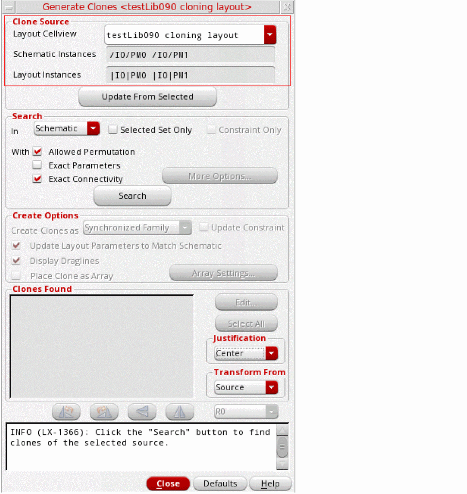
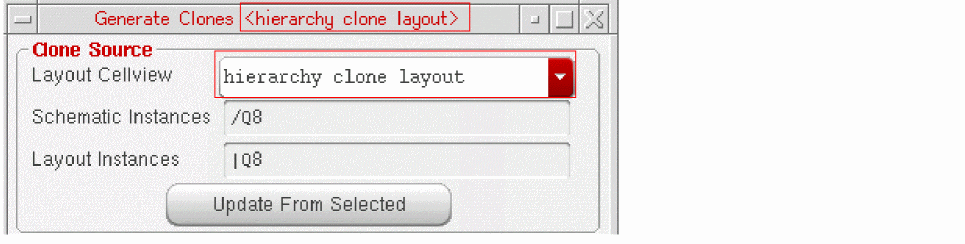
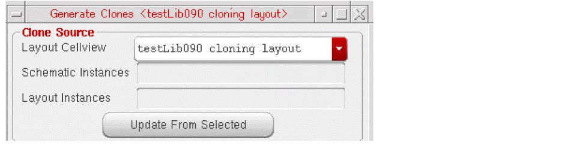

Clone Source Selection and Target Search and Generation
Clone generation using the Generate Clones form comprises two main procedures—clone source selection and clone target search and generation.
Selecting the Clone Source
To clone a section of your design, you can choose the components to be cloned from:
- a layout cellview from which the Generate Clones form is opened
- another open layout cellview, which could be open in read-only mode
- a corresponding schematic cellview
The layout cellview used as the clone source must have a corresponding schematic connectivity reference available.
When choosing the clone source from a layout cellview, the steps for generating clones can vary slightly depending on whether or not the clone source exists in the layout cellview from which the Generate Clones command is run.
Scenario 1: Generating clones when the clone source is selected from the layout cellview from which the Generate Clones command is run, or from the schematic cellview used as the connectivity reference for this layout cellview:
-
In the layout canvas, select the individual component or components within an area that needs to be cloned and choose the Connectivity – Generate – Clones command.
Alternatively, in the schematic cellview, select the individual component or components within an area that need to be cloned. Then, in the layout cellview in which the clone needs to be generated, choose the Connectivity – Generate – Clones command.
The Generate Clones form appears.
- The clone source selected from the schematic cellview is considered valid only when it is correctly bound.
- If the structure you want to clone is a partially implemented mfactored component, you must select it in the layout canvas.
If the selected instances and shapes form a valid clone source, the Clone Source fields are already filled in when the form opens, as shown in the figure above.
If the clone source is selected from the layout cellview in which the target clone needs to be generated, the name of the layout cellview as displayed in the Clone Source group box is the same as that of the current layout cellview. This is illustrated in the figure below.
Instead of opening the Generate Clones form with the clone source already selected, you can also open the form with nothing selected. After the form opens, as shown in the figure below, select the clone source in the layout or schematic canvas, and click Update From Selected.
If the selected instances and shapes form a valid clone source, the instance names are displayed in the clone source fields. You can use the same method to change the clone source without closing the form.
Scenario 2: Generating clones when the clone source is selected from one layout cellview and the clones need to be generated in another layout cellview.
- Choose the Connectivity – Generate – Clones command to open the Generate Clones form in the layout cellview in which the clones need to be generated.
-
In the Layout Cellview drop-down list, select the layout cellview to use as the source cellview.
The Layout Cellview drop-down lists all the layout cellviews open in Layout XL that have a corresponding connectivity reference available, including any cellviews that are open in read-only mode.s
Related Topics
Cloning between Multiple Cellviews
Return to top